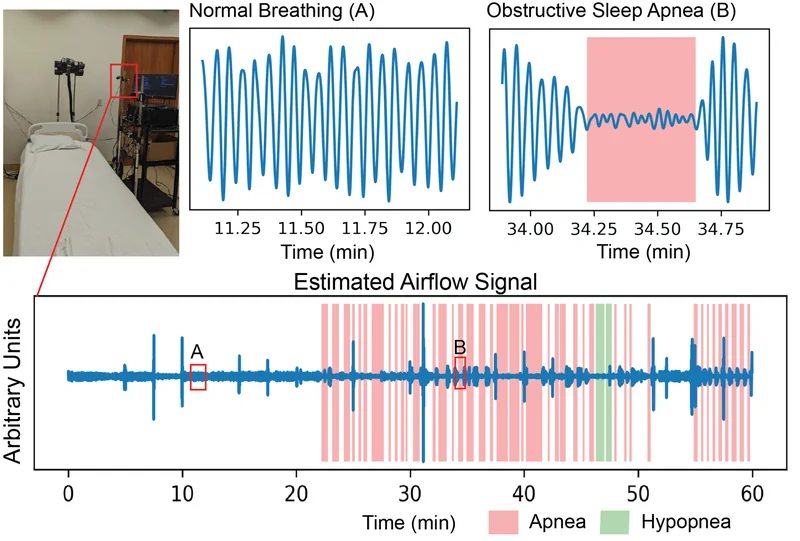
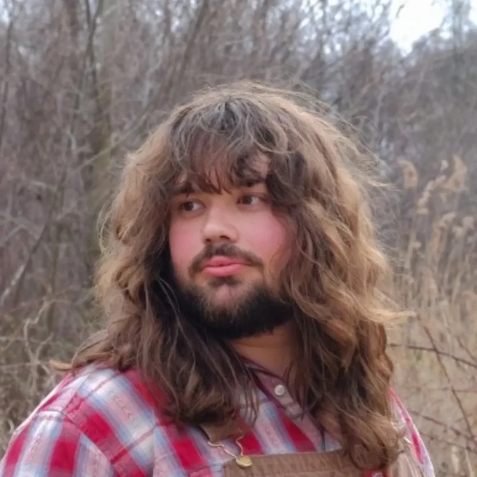

Thermal Imaging and Radar for Remote Sleep Monitoring of Breathing and Apnea
Kai Del Regno, Alexander Vilesov, Adnan Armouti, Anirudh Bindiganavale Harish, Selim Emir Can, Ashley Kita, Achuta Kadambi
arXiv preprint, 2024

I am a data scientist working for the Litvak Lab at UNM. I received my M.S. in Electrical and Computer Engineering in 2024 and my B.S. in Electrical Engineering in 2023 from UCLA, where I worked in the Visual Machines Group, advised by Achuta Kadambi.
My research experience is primarily related to multimodal machine learning for data-constrained tasks, such as biogenic flux prediction and non-contact sleep apnea detection. I am currently developing machine learning methods for structure-informed flux estimation in forested watersheds, and I act as the data manager for the New Mexico Elevation Gradient eddy covariance towers.

Kai Del Regno, Alexander Vilesov, Adnan Armouti, Anirudh Bindiganavale Harish, Selim Emir Can, Ashley Kita, Achuta Kadambi
arXiv preprint, 2024
One-week field course for New Mexico undergraduates, July 2026
Kai Del Regno, Scott Steinmetz, Indu Manickam, Robert Abbott, Megan DeVan, Marcy Litvak, Dan Krofcheck
9th Annual Machine Learning/Deep Learning Workshop, Sandia National Laboratories, August 2025